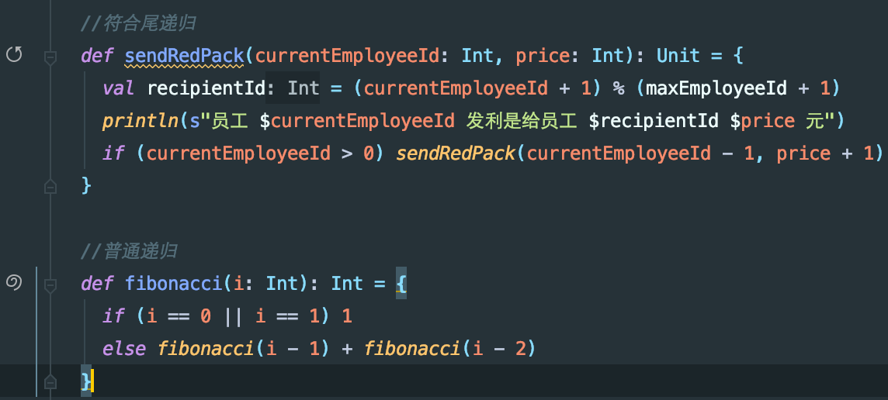

Scala入门(三)
case class和模式匹配
咱们的讲义开头已经提到了,这个系列讲义是教您怎么用Scala处理数据的.那么我们就在这里着重介绍Scala提供的一个能为您处理数据提供一个很大便利性的特性,叫做case class.
case class在默认的class基础上提供了若干便利特性(Scala默认的class基本上就是Java的class),我们先看一下一些默认class代码的运行结果
上述代码中我们可以注意到两个点,一个是println(point1)输出了Point@1e643faf,这是默认调用了Java里的Object.toString的结果,一个Scala类就是一个Java类,所以Scala类也都是Java里Object类的子类.默认的Object.toString在我们实际工作中一般起不到什么帮助,所以我们一般会重新为我们的类定义一个toString来覆盖Object.toString来方便调试监控什么的.
另外,println(point1 == point2)输出了false,因为==调用了equals方法,按照默认的Object.equals实现,这个方法是比较两个对象的内存地址,如果地址不一样就返回false.实际绝大部分数据处理场景下,几乎没有人关心两个对象地址是否一样,所以默认的equals方法也没什么用处.
每次定义一个新类,都要定义大量的重载,是一件挺麻烦的事情,所以针对群众的需要,case class出现了,我们来看下case class的表现.
定义case class的时候,您不用在x和y面前增加val(因为case class 默认都用val定义成员),并且会自动给您生成一个实用的toString和一个实用的equals方法,除此之外,还提供了便利地用旧case class局部重新赋值,生成新case class的方法(见point3),还提供了模式匹配功能,见(point1x和point1y),模式匹配功能我们接着细说.
case class 匹配
case class和模式匹配一起工作能大幅提高代码的表达能力,叙述模式匹配的作用的时候,为了能让场景更贴近实际,我们来引入一个第三方库json4s.我们的习题项目里已经加入了json4s依赖,直接用就可以了,使用方法是在代码中加入以下内容
在Ammonite中,可以这样加入json4s依赖
json4s给出了以下case class定义,这些定义可以表达一个完整的json结构
假设,现在一项工作目标来了,您需要处理一些别人产生的json,取出其中的一个字段的整型值,然而这些json有些小毛病,有的缺少这个字段,有的这个字段为null,有的这个字段是字符串形式(虽然字符串里都是整数),某些编程语言(比如说PHP)在业务复杂之后很容易产生这样格式混乱的数据,我们需要把各种情况都应对了,拿着干净的数据进行进一步的处理.
一开始,您比较傻比较天真,以为数据格式都是好的,写出了一版这样的代码,只考虑了确实有相应字段,并且格式也正确的情况
而当我们尝试编译这段代码的时候,就会收到这样的警告
告诉您不要太傻太天真,您在代码里没有考虑的异常情况可能还有很多.让我们仔细考虑下这个warning,思考自己有什么做的不足的地方,发现原来有好多情况没考虑,于是加上了针对所有情况的应对方案(毕竟数据往往是别人生成的,什么不靠谱的事情都可能发生)
现在所有情况都能应对了,不过代码稍微冗余了些,您和生产数据的小伙伴沟通了一下,发现除了JInt,JDouble,JString,JNull,JNothing这些情况是它无心之失产生的,并且数据还有的救之外,其他数据类型都是不应该产生,并且发现了马上要上报异常的,代码就可以改成这样.
我们来看下这个场景下case class加模式匹配为您做了什么.
首先它通过编译器提示帮助您找出了考虑疏漏的地方,然后针对匹配到的内容,您可以同时便捷的取出case class中需要的数据.最后,您可以通过一个通配的情况统一处理您不并关心的其它各种可能性.
变长参数匹配
模式匹配除了匹配case class和基本数据类型外,还能匹配标准库里的一些数据结构,例如Seq,我们可以利用模式匹配便利地为Seq中我们需要的内容命名
当然,这种情况需要两边元素个数完全符合才行,如果元素有多或者又少就会出现编译错误
如果我们只是想获得头部的几个元素,而忽略后面的元素怎么办?这个时候可以用一个_*表示接收后面的元素
如果后面的元素我们还是想要,而不是简单地丢弃,该怎么办呢,我们可以写一个x @ _*,表示用_*接收后面的元素,x @表示将他们命名为x
正则匹配
正则表达式是从文本中提取数据常用的工具,关于正则表达式的学习,网上有很多优秀的教程和文档大家可以自行查阅.
这里推荐一份教程http://regextutorials.com/](http://regextutorials.com/)
和一份文档https://docs.python.org/3/library/re.html (没错,就是Python语言的官方文档!你要问我Python有哪点好,我想来想去也就这个正则表达式文档确实不错)
好了,现在假设您已经掌握了基本的正则表达式,想利用Scala模式匹配的特性便利地进行工作,一项工作内容是提取出一个CSS文件中的所有键值对,然后代码就可以这么写
更多具体用例可以看Scala的官方文档
异常处理
Scala的异常处理和Java基本一样,用try {} catch {}块处理就行了,区别只是Scala用模式匹配来捕获具体的错误类型,需要注意的是,Exception的子类基本上不会是case class,而是普通class,所以模式匹配在这里只能做到识别不同的Exception类,无法自动提取出Exception的message和cause成员.
调用Java代码
在主流工作环境中,Scala代码和Java代码基本是共生的.当然有少数勇者会用Scala Native把Scala编译成机器码,还有一些勇者会用Scala.js把Scala编译成JavaScript,我们暂时不考虑这种情况,只考虑在JVM上工作的情况.
Scala调用Java代码几乎不需要什么额外的成本,如果需要使用现成的第三方Jar包,像在Java项目里一样增加依赖就行了,调用自己写的Java源码,也直接import就行,除了不需要在行尾写一个分号,和在Java里调用Java代码几乎没有区别.
需要注意的是,Java和Scala的基本数据类型是通用的,但是标准数据结构并不是,如果调用的Java方法参数或者返回值中包含List,Set,Map等类型,需要import scala.collection.JavaConverters._配合asJava,asScala方法来进行转换,具体例子如下
一些语法糖
Scala是一门语法糖很多的语言,甚至有人把Scala的这种特性称为"语法齁".善用语法糖能提升代码表达力,但是滥用语法糖会造成代码可读性下降,所以在工作中最好节制使用.这一节主要向大家介绍别人用语法糖写代码的话,我们怎么还原出它的非糖形式(Desugar).
空格和括号
Scala社区下主流的一个单元测试框架是ScalaTest,我们可以看到首页上有这样一篇代码样例
其中stack.pop() should be (2)其实用了空格语法糖,去糖化的表达形式是stack.pop().should.be(2),Scala对象中简单的单参数或者无参数方法都可以用' '代替'.'(上述代码例子中,语法糖是提升了代码表达能力的,这个应该没人会反对吧😄).
习惯别的编程语言的玩家有可能忽略一点,那就是容易被认为是'基本操作'的+ - * /等,其实也是语法糖,不管是符号,还是文字,在Scala的世界里都是平等的.
下划线
下划线是Scala代码中的常客,它在不同的上下文中出现代表着不同的含义.
- 含义一:我全都要
我全都要的含义出现在import场景下,Java中的import java.time.*操作等价于Scala的import java.time._原因这里有介绍
- 含义二:我知道你有,但我不在乎
这种场景常见于模式匹配中,您在获得一个case class后可能只对其中的某些成员感兴趣,另一些成员当时就丢弃了,但是为了模式匹配要用_做占位符,Scala官方网站的教程中就能找到例子,贴于此处
- 含义三:给一个默认值
用_赋值给某种类型的变量,相应变量会被赋值为该类型的默认值
- 含义四:跑龙套
在工作中,我们可能经常需要调用一些高阶函数给数据做简单的处理,但是我们懒得为那些高阶函数起变量名(起变量名是编程中最大的困难😓),这个时候_能为您稍许解决一些困扰
两个下划线对应简单的双参数函数场景(用到的机会不多,但是看到的容易懵)
for 循环
Scala里不光操作符是语法糖,for循环也都是语法糖来的,for循环代码会根据实际情况被编译成foreach,map和flatMap,下面我们给出一些例子.更详细些的介绍可以看官方文档.
试试摆脱break
break关键词是很多编程语言内置的特性,它在流程控制中几乎是一个必要的关键词,可以说没有break就没办法工作…但是当我们的视角从工作流变成数据的时候,break就显得并没有需要了,Scala甚至没有默认提供break,而是您需要导入才能使用.
我们来考虑一下这样一个场景,您是一名企业主,您的事业蒸蒸日上,不断地有人来投奔您要加入您的企业.这个时候为了方便记录员工信息,您就需要为员工都赋予一个工号.根据历史经验,企业主多多少少都是迷信的人,您希望员工工号都必须至少有一个6或8,并且不能有4,那么前100名员工的工号会是多少呢?让我们试试用工作流控制的方式来获得这些工号.
这段代码工作良好,结果正确.不过从数据处理的角度看,多了一些不必要的噪音(我只是想要数据啊,为什么要关心你的控制流呢),我们来看看只关心数据流的情况下代码是什么样的
我们用Iterator.iterate生成了所有整数列表,注意,Iterator.iterate只是为您定义了获得所有整数的方法,并没有真的把所有整数都产生出来放在内存里(如果是那样的话内存就爆了😨),真的把所有符合要求的数据存下来的代码是toVector,其他条件都是为这个toVector服务的.您不需要用代码声明"我要100个,到了之后程序就停下",您只要说"我要100个",停下的事情它自己会做.
递归和尾递归
递归能够帮助我们简洁的表达很多概念.假设您是一名企业主,您的企业包括您自己有100名员工,您没有上一名企业主那样迷信,所以您企业里的员工ID是0~99(0号就是您自己).现在春节刚过去,员工都斗志满满地要来公司上班啦,为了激励员工,您决定让每个员工都获得不少于一百元的开门利是.可是作为一名创业阶段的企业主,您囊中羞涩,您的预算总共只有99元.
于是您想了个主意,定了这样一个利是规则,既能满足您最初的初心,又不会超预算.您的方案是这样的,从编号最大的员工开始,先发n元利是给比自己工号大1的人(如果没有这个人,就发给老板),然后工号比自己小1的人发n+1元给自己,这样一直循环到工号0为止.刚才说了,希望大家都能拿到百元以上利是,可是预算总量有限,那老板自己委屈点,n就设置为99吧.
我们先看看相应的Java代码实现
太好了,预算没有超,大家都拿到了满意的利是,优秀的递归技巧帮助您成为了一名优秀的企业家😄
经过了多年的苦心经营,您的企业人数增加到了10000人,而您仍然保持着每年派利是激励员工的习惯,现在您希望每名员工都拿到万元以上利是了,您的预算也大幅提升到9999元.真是令人难以置信,世界上怎么会有您这么慷慨的企业主呢.您拿出了多年前那份代码,稍作修改,决定计算派利是的规则,结果遭遇了小小的问题.
您居然遭遇了Stack Overflow!
这其实也不难理解,如果您学习过本科数据结构课,您应该知道递归的一个常规实现是利用栈存储信息,递归结束后栈的内容会清空,递归过程中栈的深度可能会很深,如果过深的话就会Stack Overflow.如果您之前没有好好学习过这块内容,可以试试搜索引擎查阅'递归原理',或者看看这篇文章.
难道已经没救了吗?优雅的递归模型无法满足您作为万人规模企业主的需求了?实事并不是这样的,还有得救.
这里要提到一个概念叫做尾递归,关于什么是尾递归可以看 群众讨论1,群众讨论2.
反正我们现在的这个递归是符合尾递归的概念的,不过针对尾递归的情况,Java编译器并没有为我们做优化,也就是说在Java环境下,尾递归和普通递归并没有什么区别.但是Scala是能对尾递归做优化的,我们来看看相应的Scala版本.
问题迎刃而解了,您的企业就算到了一百万人也不怕了!
小提示:
在IDEA中,如果您的递归符合尾递归需求,您定义的递归函数左侧会出现一个带箭头的小圆圈.如果您的递归只是普通递归,您定义的函数左侧会出现一个蚊香形状.
